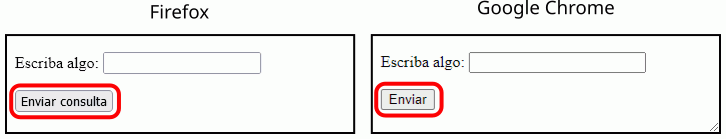
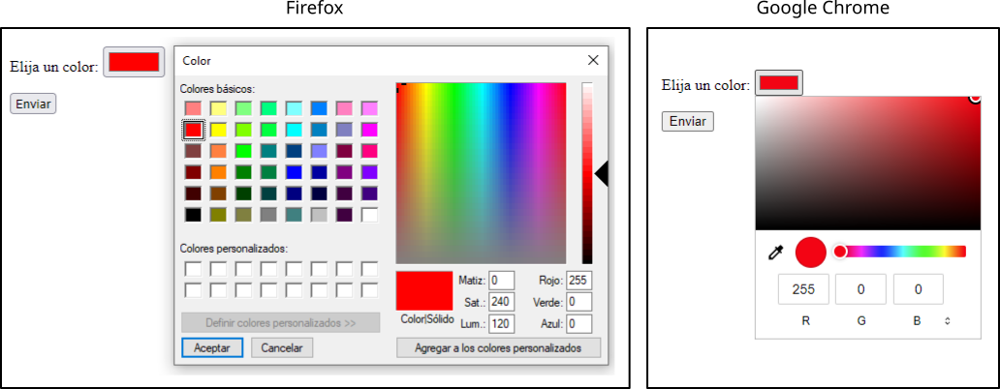
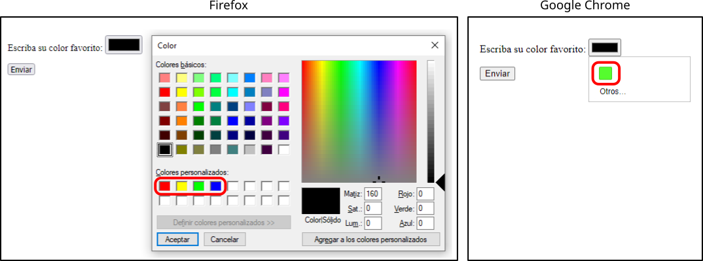
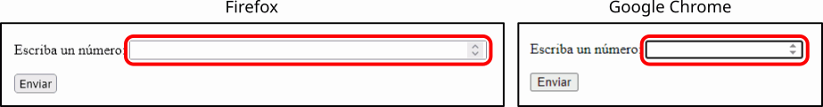

En esta página se recopilan las diferencias entre Chrome y Firefox que aparecen en otras lecciones de estos apuntes. Esta página no pretende ser una relación exhaustiva de diferencias, sino simplemente recopilar las diferencias que encontré al redactar estos apuntes.
En los casos en los que el comportamiento del navegador se puede considerar correcto, se indica con los iconos  ,
,  .
.
En los casos en los que el comportamiento del navegador se puede considerar erróneo, se indica con los iconos  ,
, 
Ni Firefox ni Chrome muestran correctamente los caracteres no ingleses en los archivos CSS guardados en el juego de caracteres UTF-8, si no reciben el juego de caracteres en la cabecera Content-Type. La línea inicial @charset "utf-8" permitida en el borrador de la recomendación CSS Syntax Module Level 3 tampoco parece funcionar ni en Firefox ni Chrome.
Firefox dispone de dos tipos de zoom:
En Firefox los dos tipos de zoom funcionan mediante el menú , con las combinaciones de teclas Ctrl++ y Ctrl+- o con la combinación Ctrl+rueda del ratón. La opción del menú permite elegir el tipo de zoom a aplicar.
Al recargar una página web (con la tecla F5):
Si se recarga la página con el atajo de teclado Ctrl+F5, Firefox sí que reinicia los controles de formulario.
Para comprobarlo, abra el ejemplo siguiente haciendo clic en el icono situado en la parte derecha del ejemplo y compruebe el funcionamiento en Firefox o Chrome:
Algunos caracteres Unicode tienen tanto presentación texto como presentación emoji. Una de las dos es la predeterminada y la otra se selecciona añadiendo los selectores de presentación texto (︎) o emoji (️)
En algunos casos, tanto Firefox como Chrome muestran correctamente todos los caracteres. En la primera línea del ejemplo siguiente se muestra un carácter que tiene presentación predeterminada emoji. En la segunda línea se muestran un carácter que tiene presentación predeterminada texto.
<p>
⌚ <span style="font-size: 300%">⌚</span>
⌚︎ <span style="font-size: 300%">⌚︎</span>
⌚️ <span style="font-size: 300%">⌚️</span>
</p>
<p>
☹ <span style="font-size: 300%">☹</span>
☹︎ <span style="font-size: 300%">☹︎</span>
☹️ <span style="font-size: 300%">☹️</span>
</p>
En otros casos, Google Chrome no muestra correctamente la forma de presentación predeterminada (texto o emoji) correcta. En el ejemplo siguiente se muestran un carácter que tienen presentación predeterminada texto, pero Chrome lo muestra como emoji.
<p>
☝ <span style="font-size: 300%">☝</span>
☝︎ <span style="font-size: 300%">☝︎</span>
☝️ <span style="font-size: 300%">☝️</span>
</p>
En otros casos, Firefox muestra una representación en modo texto al añadir el selector de presentación texto (︎), aunque ese emoji no tenga representación en modo texto.
<p>
😀 <span style="font-size: 300%">😀</span>
😀︎ <span style="font-size: 300%">😀︎</span>
😀️ <span style="font-size: 300%">😀️</span>
</p>
En otros casos, Google Chrome no muestra la representación en modo texto al añadir el selector de presentación texto (︎), ni aunque ese emoji tenga representación en modo texto.
<p>
☺ <span style="font-size: 300%">☺</span>
☺︎ <span style="font-size: 300%">☺︎</span>
☺️ <span style="font-size: 300%">☺️</span>
</p>
Los tonos de piel Fitzpatrick se pueden aplicar a los caracteres Unicode que tienen presentación texto y presentación emoji. En el caso de la presentación texto, el tono de piel se muestra con una trama de puntos más o menos densa..
El primer ejemplo siguiente muestra un carácter con presentación predeterminada en modo texto y le aplica un modificador Fitzpatrick. El primer ejemplo siguiente muestra un carácter con presentación predeterminada en modo emoji y le aplica un modificador Fitzpatrick..
<p>
☝: <span style="font-size: 300%">☝</span>
☝🏿: <span style="font-size: 300%">☝🏿</span>
</p>
<p>
☝️: <span style="font-size: 300%">☝️</span>
☝️🏿: <span style="font-size: 300%">☝️🏿</span>
</p>
Si un botón <input> no tiene definido el atributo value:
<input type="submit">
El atributo accesskey establece la combinación de teclas que coloca el foco en un elemento de un formulario.
En el ejemplo siguiente Firefox utiliza la combinación Alt+Shift+tecla para situar el cursor en las cajas de texto, mientras que Google Chrome utiliza la combinación Alt+tecla:
<input type="text" name="texto1" value="Acceso con a" accesskey="a">
<input type="text" name="texto2" value="Acceso con i" accesskey="i">
<input type="text" name="texto3" value="Acceso con o" accesskey="o">
<input type="text" name="texto4" value="Acceso con u" accesskey="u">
Chrome utiliza la combinación Alt+tecla, que tiene el inconveniente que entra en conflicto con combinaciones de teclas ya definidas por el navegador o el sistema operativo. Firefox utiliza la combinación Alt+Shift+tecla, más incómoda de utilizar, pero que no interfiere con las combinaciones ya definidas por el navegador o el sistema operativo.
En el ejemplo siguiente, Chrome no puede acceder a la caja de texto con la combinación Alt+d, ya que esta combinación traslada el foco a la barra de dirección, pero puede hacerlo con la combinación Alt+Shift+d:
<input type="text" name="texto1" value="Acceso con d" accesskey="d">En el ejemplo siguiente, Chrome no puede acceder a la caja de texto con la combinación Alt+e, ya que esta combinación abre el menú de herramientas, pero puede hacerlo con la combinación Alt+Shift+e:
<input type="text" name="texto2" value="Acceso con e" accesskey="e">En el caso de las teclas de acceso que no son las letras del alfabeto (los acentos no pueden ser teclas de acceso):
<input type="text" name="texto1" value="Acceso con 1" accesskey="1">
<input type="text" name="texto2" value="Acceso con 2" accesskey="2">
<input type="text" name="texto3" value="Acceso con 3" accesskey="3">
<input type="text" name="texto4" value="Acceso con 4" accesskey="4">
<input type="text" name="texto1" value="Acceso con ," accesskey=",">
<input type="text" name="texto2" value="Acceso con -" accesskey=".">
<input type="text" name="texto3" value="Acceso con +" accesskey="+">
Si hay varios elementos con la misma tecla de acceso, o si hay varios elementos con la misma tecla de acceso en mayúsculas y minúsculas:
<input type="text" name="texto1" value="Acceso con z" accesskey="z">
<input type="text" name="texto2" value="Acceso con z" accesskey="z">
<input type="text" name="texto3" value="Acceso con z" accesskey="z">
<input type="text" name="texto1" value="Acceso con w" accesskey="w">
<input type="text" name="texto2" value="Acceso con W" accesskey="W">
<input type="text" name="texto3" value="Acceso con W" accesskey="W">
Google Chrome muestra un control específico para seleccionar el color, mientras que Firefox muestra el control proporcionado por el sistema operativo.
Elija un color: <input type="color" name="colorElegido">
Firefox admite todos los formatos de color en la lista de opciones, pero Chrome sólo admite el formato RGB. En cualquier caso, el control envía el color en formato RGB.
<p>
Indique su mes favorito:
<input type="color" name="favorito" list="colores">
</p>
<datalist id="colores">
<option value="hwb(0 0% 0%)"></option>
<option value="yellow"></option>
<option value="#00FF00"></option>
<option value="hsl(240 100% 50%)"></option>
</datalist>
Google Chrome muestra un control específico para seleccionar la hora, pero Firefox no lo hace.
Hora: <input type="time" name="hora">Nota: Desde Firefox 144 (publicado en octubre de 2025), la preferencia dom.forms.datetime.timepicker permite activar un control específico para seleccionar la hora [Ref].
Google Chrome muestra un control específico para seleccionar el mes y el año, pero Firefox no lo hace. Además, Chrome envía el dato en el formato AAAA-MM, pero Firefox no lo hace.
Mes: <input type="month" name="mes" size="20">Bug de Firefox relacionado:
Google Chrome muestra un control específico para seleccionar la semana y el año, pero Firefox no lo hace. Además, Chrome envía el dato en el formato AAAA-WSS, pero Firefox no lo hace.
Semana: <input type="week" name="semana" size="20">Bugs de Firefox relacionados:
Según MDN, el atributo size no se debe utilizar para establecer el tamaño de un control numérico. Google Chrome no hace caso de ese atributo, pero Firefox sí lo hace.
Escriba un número: <input type="number" name="numero" size="50">
Firefox admite favicons animados, pero Google Chrome no.
Nota: El bug 19731 de Chrome, que trata este tema, se abrió en agosto de 2009 y se cerró el mismo día indicando que no se pensaba implementar debido a su dificultad y poco interés.
Firefox permite elegir hojas de estilo alternativas, pero Chrome no.
Si el ordenador dispone de fuentes que tengan ambas variantes, Firefox distingue entre los valores italic y oblique de la propiedad font-style, mientras que Google Chrome no lo hace.
El ejemplo siguiente puede verse correctamente en Firefox una vez instalada la fuente libre Latin Modern Roman (realmente son 11 fuentes distintas para cubrir las variantes más habituales).
p.italic {
font-family: "Latin Modern Roman 10";
font-style: italic;
}
p.oblique {
font-family: "Latin Modern Roman 10";
font-style: oblique;
}
El ejemplo anterior da el siguiente resultado en Firefox 62:

La propiedad font-size-adjust funciona parcialmente en Firefox, pero no en Google Chrome.
p {
font-size: 20px;
}
p {
font-size: 20px;
font-size-adjust: 1.5;
}
p {
font-size: 20px;
font-size-adjust: 0.5;
}
Si un párrafo tiene sobrerrayado y el tamaño de las palabras no es siempre el mismo:
Probablemente, la recomendación no especifica qué hacer en este caso particular y cada navegador ha adoptado una solución diferente (por confirmar)
<p style="text-decoration: overline">
Un
<span style="font-size: 200%">párrafo</span>
<span style="font-size: 300%">sobrerrayado</span>.
</p>
<p style="text-decoration: overline">
<span style="font-size: 300%">Otro</span>
<span style="font-size: 200%">párrafo</span>
sobrerrayado.
</p>
En Firefox la propiedad color establece el color del borde de la línea, pero en Chrome no lo hace.
hr {
color: red;
}
hr {
height: 1px;
color: red;
}
hr {
height: 10px;
color: red;
}
Firefox no muestra los dos ejemplos siguientes de la misma manera, mientras que Chrome sí lo hace.
span.capital {
float: left;
background-color: pink;
color: red;
font-family: monospace;
font-size: 400%;
}
p.capital::first-letter {
float: left;
background-color: pink;
color: red;
font-family: monospace;
font-size: 400%;
}
Nota: En realidad no tengo claro si quien lo hace bien es Firefox o Chrome.
El contorno de un elemento en-línea no se muestra de la misma manera en Google Chrome que en Firefox.
span.con-outline {
outline: black 3px solid;
}
Si se escriben dos valores en la propiedad compuesta columns, si el elemento tiene un tamaño predefinido, Firefox hace caso únicamente al número de columnas, pero si el elemento no tiene un tamaño predefinido (tablas, elementos flotantes, etc.), hace caso de los dos valores. Chrome no lo hace.
p {
columns: 2 8em;
float: left;
text-align: justify;
}